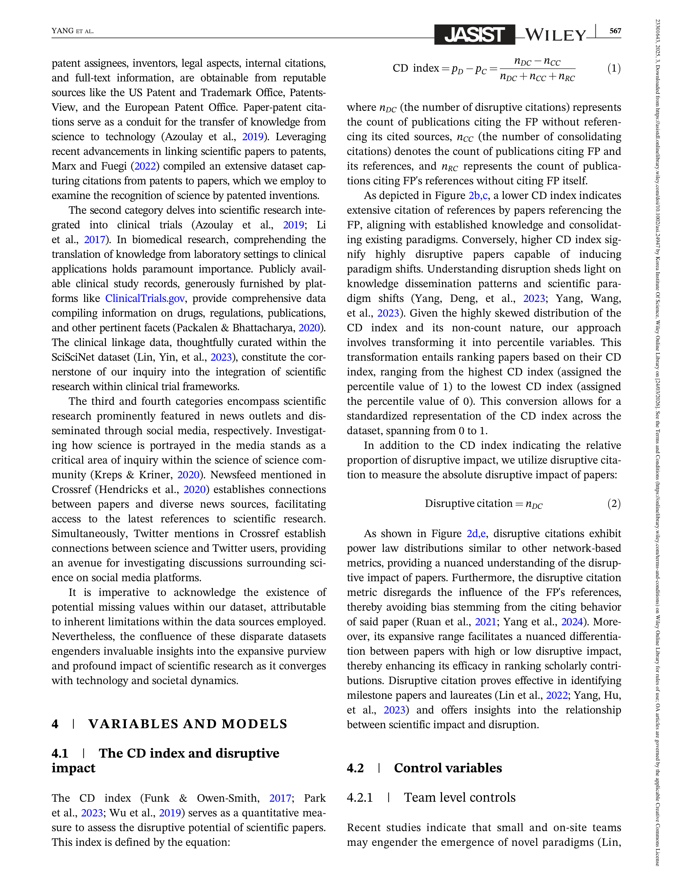
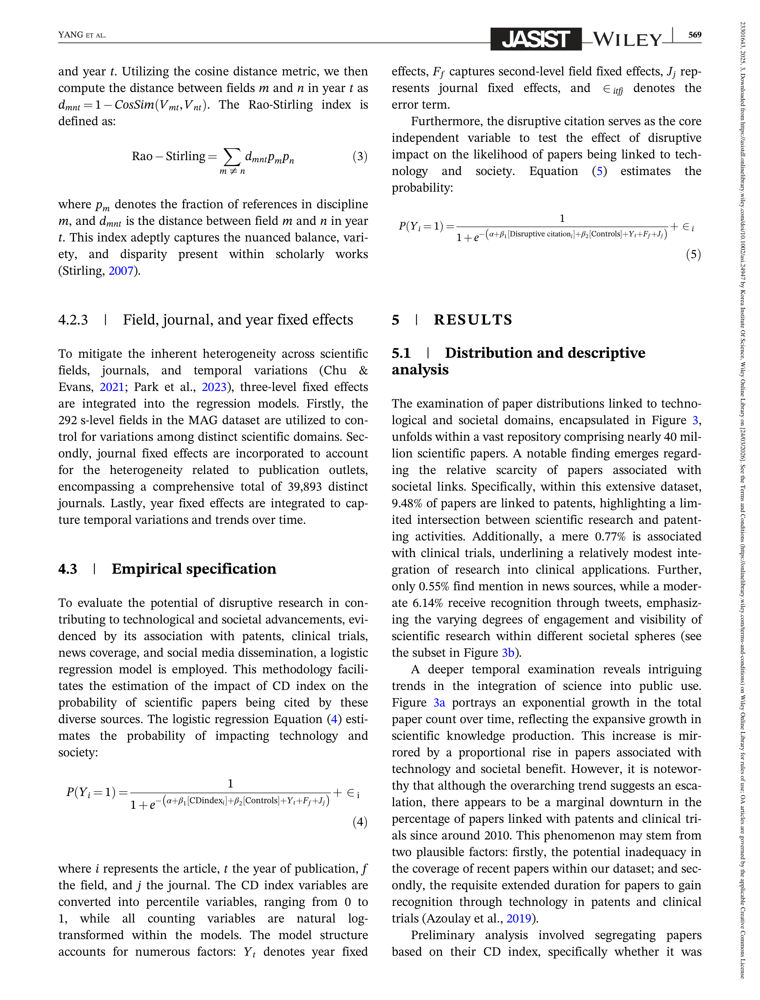

Figure 1
저자: Alex J. Yang, Xiaohui Yan, Haotian Hu, Hanlin Hu, Jia Kong, Sanhong Deng | 날짜: 03/2025 | DOI: 10.1002/asi.24947
Figure 1
본 연구는 disruptive한 과학 논문이 기술 및 사회 영역에 미치는 영향을 약 4천만 편의 논문 데이터를 통해 분석하였다. 흥미롭게도, CD index가 높은 논문은 특허, 임상시험, 뉴스, 소셜미디어에서 인용될 확률이 오히려 낮은 반면, 저자들이 새롭게 제안한 "disruptive citation"(절대적 disruptive impact) 지표가 높은 논문은 기술 및 사회 영역에서 인용될 확률이 유의하게 높았다. 이 발견은 CD index에 내재된 체계적 bias를 드러내며 과학적 disruption 측정의 새로운 관점을 제시한다.

Figure 2
과학 연구의 disruptive 성격과 기술적/사회적 영향 간의 관계는 충분히 이해되지 않았다. CD index(Funk & Owen-Smith, 2017)는 citation network의 구조적 특성을 분석하여 논문의 disruptive 정도를 평가하는 대표적 지표이나, 여러 한계가 보고되어 왔다: 높은 CD index가 반드시 높은 citation impact를 의미하지 않으며, 소규모 팀이 대규모 팀보다 더 disruptive한 결과를 산출하는 등의 역설적 패턴이 존재한다. 이러한 CD index에 대한 bias가 기술적/사회적 영향 영역까지 확장되는지 탐구할 필요가 있었다.

Figure 3

Figure 4

Figure 5
본 연구의 핵심 기여는 세 가지이다. 첫째, CD index와 기술/사회적 영향 간의 역설적 관계를 대규모로 실증하여, 기존 disruption 측정 지표의 한계를 체계적으로 보였다. 둘째, "disruptive citation"이라는 새로운 지표를 제안하여 CD index의 상대적 비율 기반 한계를 보완하는 절대적 disruptive impact 측정법을 제시하였다. 셋째, 과학적 disruption과 기술/사회적 영향 간의 관계에서 시기별/분야별 이질성을 상세하게 분석하여, disruption 연구의 맥락 의존성을 입증하였다.
저자들이 밝힌 한계: (1) 정량적 지표에 의존하여 disruptive 연구의 질적 측면을 포착하지 못할 수 있음, (2) 특허, 임상시험, 뉴스, 소셜미디어 외의 사회적 영향(정책, 문화적 변화 등)은 탐구되지 않음, (3) 간접적 연결(예: 기술/사회 영역에 인용된 논문이 인용하는 논문)은 식별할 수 없음. 리뷰어 관점에서 추가적 한계로, MAG 데이터가 2021년 이후 업데이트되지 않는다는 점, Twitter 데이터의 대표성 문제, 그리고 disruptive citation이 결국 총 citation 수와 높은 상관관계를 가질 수 있어 novelty보다는 단순 impact를 측정하는 것에 가까울 수 있다는 점이 있다.
총평: CD index의 체계적 bias를 대규모 데이터로 실증하고 disruptive citation이라는 보완적 지표를 제안한 의미 있는 연구이나, 문체가 다소 장황하며 disruptive citation과 총 citation 간의 conceptual distinction이 보다 명확히 논의될 필요가 있다.